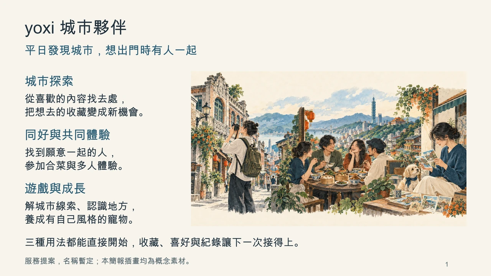

城市探索
會議討論
分享貼文、收藏地點，再推薦可能喜歡的新去處。
後續補強
說明推薦符合哪個細節、到了能做什麼，再接續規劃與導覽。

會議裡的想法整理成三個並列支柱，再補上具體體驗與彼此的連結。
分享貼文、收藏地點，再推薦可能喜歡的新去處。
說明推薦符合哪個細節、到了能做什麼，再接續規劃與導覽。
找同好、一起吃合菜、揪團與協調費用。
可以先找伴再選地點；朋友加入後，安排也照顧雙方想做的事。
城市打卡、寵物、小遊戲與獎勵，增加平日使用的理由。
看線索找街景、完成主題蒐集與寵物成長，把發現接到下次探索。
三種用途都能獨立開始。收藏、規劃、導覽、費用與交通依需要配合。
具體玩法、工具、成本與試辦安排是後續建議，仍待團隊確認。
回覆時附上簡報頁名或頁碼，方便對照修改。
目前是概念提案，尚未完成 App、AI 實測與影片。簡報插畫為示意，非地點實景。